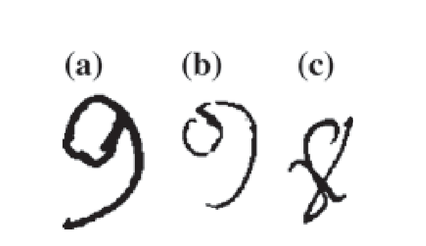

Recognising handwritten Oriya digits by comparing skeleton graphs
Oriya is a language of India, and it has received less attention from handwriting-recognition researchers than many other scripts. We show a way to recognise its handwritten digits by turning each digit into a small graph and measuring how much it overlaps with graphs of known digits. After training on 5000 images, the method reached 97.64% accuracy on 2200 test images.
Collecting and cleaning the digits
The samples came from students of the National Institute of Science and Technology Orissa, who wrote digit sequences naturally on a form designed for the purpose. The data set was developed at the Center for Microprocessor Applications for Training Education and Research, in the Computer Science and Engineering Department at Jadavpur University. In total there were 7200 images, 720 per digit.
We scanned the forms, cropped out each digit by hand, and converted it to black and white using a threshold of 80%. We trimmed it to the first black pixel on each side, resized it to 64 by 64 pixels and skeletonised it. Skeletonising peels away the edge of the pen stroke until only a line one pixel wide is left, without breaking the stroke apart.

From a skeleton to a graph
We cut the 64 by 64 image into a four by four grid of blocks, each 16 by 16 pixels. Every block becomes one of 16 nodes. Two neighbouring blocks are joined by an edge when the pen stroke continues across the border between them. The paper gives separate rules for the right, lower, lower-left and lower-right neighbours. The result is a graph whose shape follows the digit's shape.

Similarity and classification
To compare two graphs we look for their maximum common subgraph, the largest structure that appears in both. The more alike two digits are, the larger that shared part. The similarity score combines the fraction of nodes shared and the fraction of edges shared.
For each image we computed its average similarity to the training images of each of the ten digits. That gives ten numbers, one per digit, which serve as the features for a k-nearest-neighbour classifier. It labels a new image by majority vote among the k closest training samples. We ran it in the Weka toolkit.
What we found
We trained on 5000 images, 500 per digit, and tested on 2200 images, 220 per digit. Accuracy was 97.72% on the training set and 97.64% on the test set. We tried k = 1, 3 and 5 and the accuracy did not change.
Digits 0, 3 and 8 scored the highest F-measure, a score that balances finding the right images against picking wrong ones (Table 1). Digit 7 scored the lowest (Table 1). Of its 220 test images, 196 were correct, 15 were read as a 2 and 9 as a 6 (Table 2).
Results in more detail
Table 1 breaks the 97.64% down by digit. For each digit it gives the true-positive rate (the share of that digit's images read correctly), the false-positive rate (how often other digits were wrongly labelled as this one), precision, recall and the F-measure.
| Digit | TP rate | FP rate | Precision | Recall | F-measure |
|---|---|---|---|---|---|
| 0 | 1 | 0 | 1 | 1 | 1 |
| 1 | 0.982 | 0.002 | 0.982 | 0.982 | 0.982 |
| 2 | 0.959 | 0.01 | 0.913 | 0.959 | 0.936 |
| 3 | 1 | 0 | 1 | 1 | 1 |
| 4 | 0.995 | 0.003 | 0.978 | 0.995 | 0.986 |
| 5 | 0.977 | 0.001 | 0.995 | 0.977 | 0.986 |
| 6 | 0.964 | 0.005 | 0.959 | 0.964 | 0.961 |
| 7 | 0.891 | 0.006 | 0.942 | 0.891 | 0.916 |
| 8 | 1 | 0 | 1 | 1 | 1 |
| 9 | 0.995 | 0.001 | 0.995 | 0.995 | 0.995 |
| Avg. | 0.976 | 0.003 | 0.977 | 0.976 | 0.976 |
Digit 7 has the lowest recall, 0.891, and digit 2 has the lowest precision, 0.913. The averages over all ten digits are 0.976 for the F-measure and 0.977 for precision (Table 1).
The paper also gives a confusion matrix, which counts for each actual digit how many images were read as each digit. Table 2 condenses it: for each digit it shows how many of the 220 test images were correct and where the rest went.
| Actual digit | Correct (of 220) | Read as another digit (number of images) |
|---|---|---|
| 0 | 220 | none |
| 1 | 216 | 2 (2), 7 (1), 9 (1) |
| 2 | 211 | 1 (3), 7 (6) |
| 3 | 220 | none |
| 4 | 219 | 5 (1) |
| 5 | 215 | 4 (5) |
| 6 | 212 | 2 (3), 7 (5) |
| 7 | 196 | 2 (15), 6 (9) |
| 8 | 220 | none |
| 9 | 219 | 1 (1) |
Most mistakes involve the digit 7. Besides the sevens that were misread, six twos and five sixes were read as a 7, and five fives were read as a 4 (Table 2). The paper shows three misread examples: a 7 read as a 2, a 6 read as a 7 and a 5 read as a 4.

Discussion
We conclude that similarity based on the maximum common subgraph is a workable way to recognise handwritten Oriya digits. The paper takes the 97.64% test accuracy as establishing the soundness of the system. Two ingredients do the work. One is a graph that follows the shape of the thinned stroke. The other is a feature vector that holds the average similarity of an image to each of the ten digits in the training set.
For context, the paper recalls earlier work on Oriya. A 2007 system for handwritten Oriya characters used curvature features and a quadratic classifier, reducing 1176 features to 392 with principal component analysis, and had a success rate of 94.60% on 18,190 test samples. A 2012 method used a Hopfield neural network for handwritten Oriya numerals. The paper does not compare them with our result.
The limits are these. We tested one data set of one script. The pipeline also depends on a skeletonising routine implemented in MATLAB, and the paper suggests that customising the thinning step may boost the results. For future work we propose running the method on more data sets, including other scripts, and finding a way to use graph kernels as the similarity measure.
The same family of similarity measures had already been used in our earlier work on classifying text.
Sources
The figures and tables listed here are taken from the paper cited at the top of this page; the numbers quoted in the text come from it too.
- Figures: Fig. 3, Fig. 4, Fig. 5
- Tables: Table 1: per-digit true-positive rate, precision, recall and F-measure; Table 2: confusion matrix of the 2200 test images
Cite the paper
Swarnendu Ghosh, N Das, M Kundu, M Nasipuri (2016). Handwritten Oriya digit recognition using maximum common subgraph based similarity measures. Information Systems Design and Intelligent Applications, Advances in Intelligent Systems and Computing, Vol. 435, pp. 165–173 · Springer.
@inproceedings{ghosh2016handwritten,
author = {Ghosh, Swarnendu and Das, N and Kundu, M and Nasipuri, M},
title = {Handwritten Oriya digit recognition using maximum common subgraph based similarity measures},
booktitle = {Information Systems Design and Intelligent Applications},
volume = {435},
pages = {165--173},
publisher = {Springer},
year = {2016},
doi = {10.1007/978-81-322-2757-1_18}
}